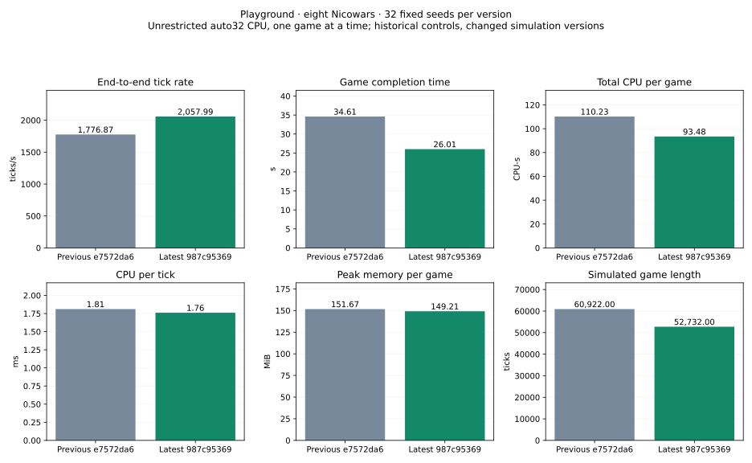

32 fixed seeds, 128×128 Playground, eight Nicowars, one unrestricted auto32 CPU game at a time. Release GCC13 builds; same commands, map bytes and shared library hashes.
Previous: e7572da6be15566bf20086f40a73a0f4b7c2a83d
Current: 987c953698bb3f0bfd1078184773075ba3313091
| Mean per completed game | Previous | Current | Change | Paired 95% interval |
|---|---|---|---|---|
| End-to-end tick rate (ticks/s) | 1,776.868 | 2,057.993 | +15.82% | [+12.71%, +19.02%] |
| Game completion time (s) | 34.608 | 26.014 | -24.83% | [-35.77%, -11.63%] |
| Total CPU per game (CPU-s) | 110.227 | 93.480 | -15.19% | [-27.00%, -1.30%] |
| CPU per tick (ms) | 1.811 | 1.761 | -2.80% | [-5.63%, +0.13%] |
| Peak memory per game (MiB) | 151.671 | 149.208 | -1.62% | [-4.90%, +1.70%] |
| Simulated game length (ticks) | 60,922.000 | 52,732.000 | -13.44% | [-25.32%, +0.79%] |
| Recorded orders (orders) | 24,479.406 | 22,249.219 | -9.11% | [-18.29%, +0.99%] |
Completion counts: {'previous': {'winners': 32, 'caps': 0}, 'current': {'winners': 32, 'caps': 0}}. Winner and finishing tick match on 0/32 paired completed seeds.

Results, intervals and raw audit · Earlier historical references